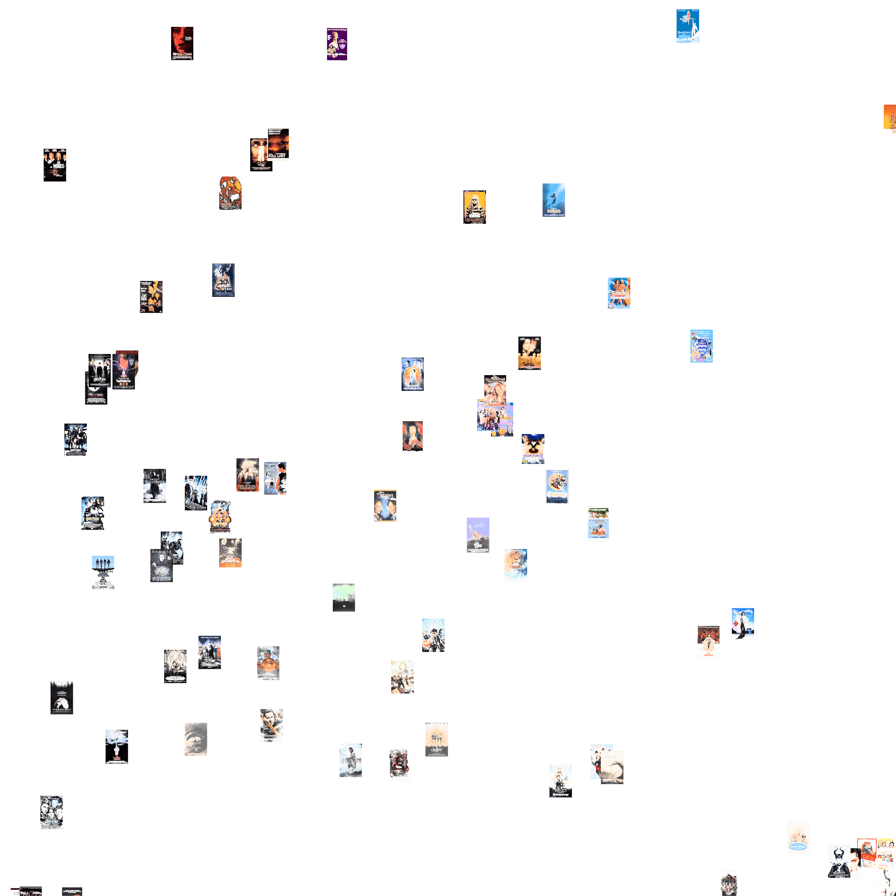
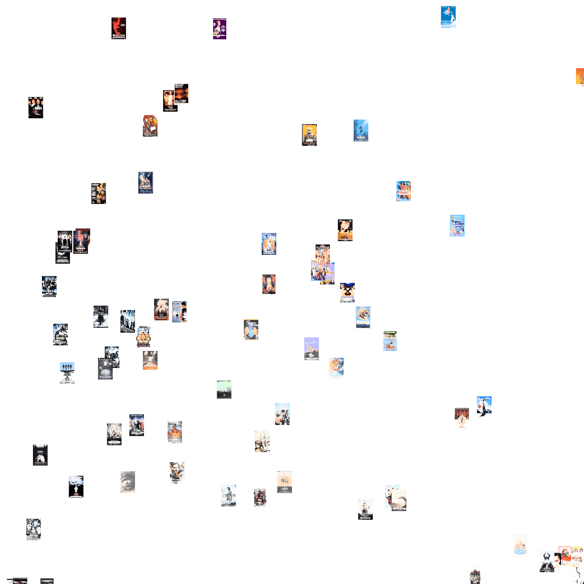
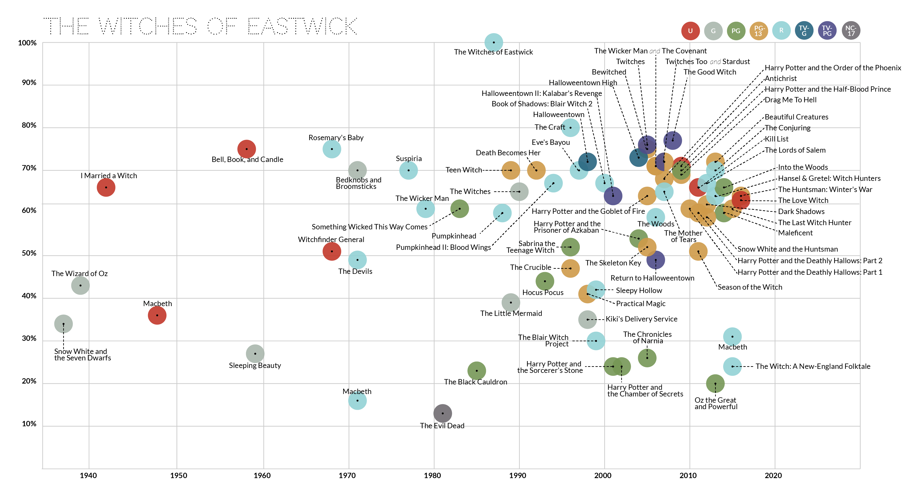
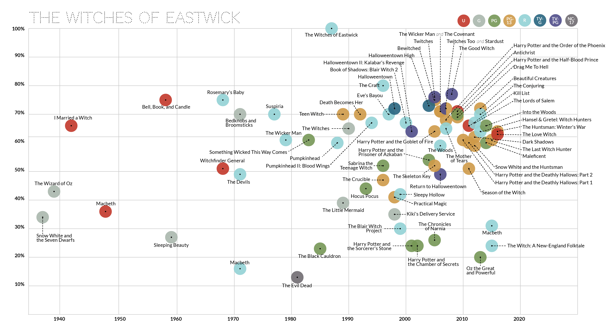

 


Corpus Development and Collection
In this first phase of Digital Witchcraft, we collected an inclusive corpus*The inclusive list is typically unwieldy and includes all films that fit a “simple, tautological definition” (7). For example, a Western (by this definition) is a film that takes place in the West. An exclusive list is curated and focused on finding the quintessential films of a genre. Altman suggests that the inclusive list is based on semantics whereas the exclusive list is based on syntactics. of witch films. Despite the witch’s prevalence in the collective imagination, no singular definition exists. For example, if we consider both The Church and School of Wicca and Louisiana Voodoo, each employs their own unique definition and identity. In the context of film genre, though, cultural census allows us to readily identify a large number of so-called “witch films” that have co-opted the term. We let public opinion guide us as we created our corpus: If a film was called a witch film by film distributors, marketing materials, fan websites, listicles, or scholarly articles, we included it. This methodology necessarily introduces certain biases, and in our case it immediately illustrated how the figure of the witch is white-washed and subdued in media. Lastly, we supplemented the list with any film that included named “witches,” such as the three Macbeth films.
We then collected dialogue transcripts, original release posters, and most popular stills of each film.*We conducted our search from the same computer over a one-day window to eliminate differences between browsers on different computers and any changes to available results. Occasionally, the selection of our film stills required various editorial decisions, including selecting identical, higher resolution versions of film stills and excluding returns from the incorrect film. We employed the image comparison tool ImagePlot to examine differences and similarities in hue, brightness, and saturation among the release posters and film stills. Using the text comparison tool SameDiff, we simultaneously compared each witch film’s dialogue to six films*We picked these six films to serve as a proof of concept. We have plans in the future to gather similarity scores for all films in the corpus. that indicate watershed moments in the genre’s development: Snow White and the Seven Dwarfs (David Hand et al, 1937), The Witches of Eastwick, The Craft, Halloweentown, The Blair Witch Project, and Harry Potter and the Sorcerer’s Stone (Chris Columbus, 2001). Initially, we selected these prototypical films based on box office receipts. The films that appeared when we found these receipts, after we adjusted for inflations, were Snow White and the first Harry Potter. We also observed how seminal two specific films, The Witches of Eastwick and The Craft, were in fannish and scholarly conversations about witch films. Similarly, when we searched popular culture lists, the made-for-television movie Halloweentown occupied a significant place in conversations; this film highlighted a cycle of made-for-television witch movies that our initial view of box office receipts ignored. The following demonstrates our findings and analysis thereof.
Visual Analysis Using ImagePlot
In addition to informing our definition of witch films as a genre, cultural perception also shaped how we approached visual analysis. As mentioned earlier, we analyzed theatrical posters and film stills to consider both how this genre is marketed and received by audiences.
For theatrical posters, we used the poster associated with each film on the Internet Movie Database (IMDB). IMDB provided continuity—nearly all U.S. films are included in the database—and also allowed us to study how viewers perceive witch films, because IMDB pages are curated by volunteer contributors rather than by the film’s distributors. ImagePlot, then, allows us to perform a color study of the collection of theatrical posters, indicating what shared visual characteristics define marketing techniques of the generic witch film.
We first rendered the posters as a polar visualization of brightness and hue, which compares the relative lightness of the image to the variations in colors or shades as they relate to the color wheel. The majority of posters clustered around the center of the graph, which means that, on average, those images use darker hues than ones toward the edges. There were relatively few posters that used vibrant blue hues, with the exceptions of Bewitched (Nora Ephron, 2005) and Sleeping Beauty (Clyde Geronimi, 1959), and even fewer that used green hues, excluding Rosemary’s Baby. Yet, if we consider the films at the center of the graph, the generic witch film looks different than expected. Where we might anticipate some combination of warmer yellows and oranges, following the model of Practical Magic (Griffin Dunne, 1998) or Halloweentown, posters most commonly used black in combination with colder blues and grays to suggest that the generic witch film poster is icier, darker than expected. A surprising trend was the lack of reds.
We also organized these theatrical posters to compare brightness and saturation along the x- and- y-axes respectively. Here, the visualization indicates a trend of higher saturation in theatrical posters, which generally aligns with the darker hues of our first graph. But organizing the posters by brightness and saturation also reveals a cluster of outliers not apparent in our first visualization. There is a cluster of films—The Wizard of Oz (Victor Fleming, 1939), Little Witches (Jane Simpson, 1996), The Crucible (Nicholas Hytner, 1996), and Maleficent (Robert Stromberg, 2014), among others—near the bottom right corner that have the highest possible brightness and lower color saturations. All predominantly white in hue, these posters range across subgenres and historical periods.
Our visualization of film stills supports this analysis. For each film, we collected the first image return from a Google Search for “[film title] + film still.” Although the Google Search algorithm is partially randomized, influenced by factors like the computer’s previous search history, it also ranks pages based on their relevance to search terms and allows for a study of how public discourse contextualizes each film.*We conducted our search from the same computer over a one-day window to eliminate differences between browsers on different computers and any changes to available results. Occasionally, the selection of our film stills required various editorial decisions, including selecting identical, higher resolution versions of film stills and excluding returns from the incorrect film. As the graph shows, the majority of film stills maintain a lower brightness and higher saturation. Yet there are several exceptions: Suspiria (Dario Argento, 1977), Teen Witch (Dorain Walker, 1989), The Little Mermaid (Ron Clements & John Musker, 1989)—nearly off the graph—Halloweentown, and The Wicker Man (Neil LaBute, 2006).
Textual Analysis Using SameDiff
Turning from the visual similarity to looking at the dialogue, we gathered cosine similarity scores for our six benchmark films resulting in six distinct graphs, rendered using a combination of RawGraphs and Adobe Illustrator. In all graphs, the x-axis represents chronological time and the y-axis denotes the percent similarity between a film and the potential prototypical film. We included ratings because we thought that there would be some connection or pattern in similarity between those films with similar ratings. While this bore out in the made-for-TV witch films, beyond this cycle we don’t see any significant ratings-based patterns.
The graphs revealed a few unexpected trends. One of the most prominent cycles is that of Halloweentown. Many of the closest films to this are in fact other made-for-television witch films, such as Sabrina the Teenage Witch. The success of Halloweentown prompted several sequels, including Halloweentown II: Kalabar’s Revenge (Mary Lambert, 2001), Halloweentown High (Mark A. Z. Dippe, 2004), and Return to Halloweentown (David Jackson, 2006). Meanwhile, the Disney Channel also put out Twitches (Stuart Gillard, 2005) and Twitches, Too (Stuary Gillard, 2007). This cycle is nested within the genre; for example, Halloweentown and Witches of Eastwick are 72 percent similar.
The Harry Potter films represent a distinct cycle but remain a generic outlier. This underlines the ways in which Harry Potter was not marketed as a witch film, even though half the characters are witches. Despite the fact that the semantic elements are present—the broomsticks, wands, cats and spells—the film’s dialogue is quite dissimilar from other witch films. For example, Harry Potter and the Sorcerer’s Stone is only 24 percent similar to The Witches of Eastwick.
While Harry Potter represents an outlying cycle in the genre, The Blair Witch Project and Snow White are outliers all together. They are entirely dissimilar from the majority of films in the genre and do not seem to initiate the production of dialogue-similar films. Snow White is the highest grossing film in our corpus with multiple theatrical releases. One would think that the second highest grossing film and another heavy-hitter for Disney, Sleeping Beauty, would have used similar language. Yet Sleeping Beauty is only 18 percent similar to its studio predecessor. In regards to our other outlier, the only films that resembles The Blair Witch Project is The Woods at 52 percent, with all other films falling at or below 32 percent. Perhaps we might say that The Blair Witch Project is a horror film first, and a witch film second.
If two prototypical, theatrical witch films seemed to emerge from this study, it would be The Witches of Eastwick and The Craft. Looking at the timeline of these graphs, we see an uptick in the number of witch films produced after The Witches of Eastwick. This could be explained by an uptick in the sheer number of movies being made. However, it could also be tied to the post-1970s increase in interest in Wicca and the concurrent commodification of witchcraft or to greater recognition by production companies of the attractiveness of the witch film as a genre. It is also interesting that The Witches of Eastwick and The Craft are 80 percent similar, despite the fact that they are presumably geared toward distinct audiences: The first is about three adult female friends having shared sexual, magical, and maternal experiences, while the second is about the perils and promise of ostracization and female friendship in high school. Both films have garnered the majority of fan and scholarly attention in the genre, so it is at the same time unsurprising that they coalesce at the level of language.